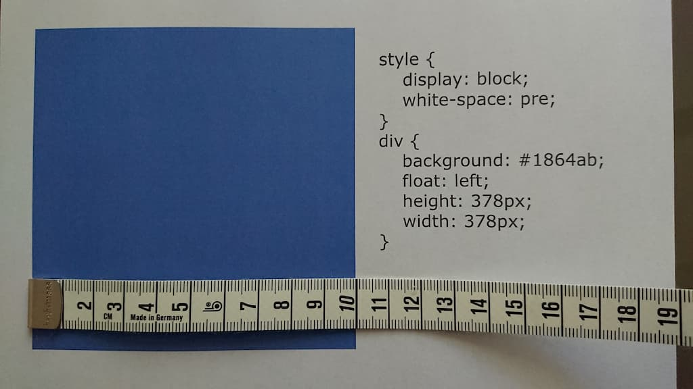

Codons un carré d’un pixel CSS de côté, et affichons le sur l’écran d’un XZ1 Compact :
Qu’a-t-il bien pu lui arriver entre deux ? Suivons son périple du code à l’écran !
— Bon, mon côté mesure un pixel CSS, mais combien mesure un pixel CSS au juste ?
— 1/96 pouce ! s’exclame une imprimante qui passait par là. C’est le W3C qui le dit :
1px = 1/96th of 1in
C’est une unité absolue, donc elle est liée aux unités physiques par un ratio
constant, du coup ton pixel (px) mesure à la fois :
pt)pc)in)cm)mm)Q)Qui utilise des quarts de millimètre sérieusement… Bref ça t’ira ?!
— Hm merci, mais quelque chose me turlupine…
— Quoi donc ? Si j’imprime un carré de 378 pixels CSS de côté il mesure bien 10 centimètres.
— Ok je vois, mais sans vouloir t’offenser tu ne connais que les feuilles A4. Tu imagines 1/96 pouce sur l’écran du Charlotte Motor Speedway ?
Ses pixels physiques font plus d’un pouce de côté donc impossible d’afficher si petit. Et puis les spectateurs sont au moins à 500 mètres, ils ne me verraient jamais !
— Bien raisonné mon petit carré ; les imprimantes voient rarement plus loin que leur papier !
— Ça fait plaisir d’aider… Débrouillez-vous sans moi si c’est comme ça.
— Ouais c’est ça… Salut ! Bon, reprenons. Imprimer un document ancre ses unités physiques à leur mesure réelle, ok. Mais toi tu dois être affiché sur un écran donc c’est l’inverse : on va ancrer ton pixel CSS et c’est plus compliqué, donc tu as besoin d’un guide : moi, le pixel de référence !
— Mais attendez si on ancre le pixel CSS qu’advient-il des ratios entre les unités physiques ?
— Ils restent constants ! Du coup un pouce CSS ne mesurera pas forcément un pouce physique. En même temps on s’en fout, ce serait bizarre de vouloir mesurer les mêmes dimensions quel que soit le support, tu l’as remarqué toi-même.
— Attendez… Reculez pour voir ?
— Euh ok… Comme ça ?
— C’est bien ce qui me semblait : je vous vois toujours à la même taille quelle que soit la distance entre nous !
— Eh oui, je ne suis pas une simple taille mais une taille apparente. Le concept c’est que deux objets de même taille apparente apparaissent à la même taille, quelles que soient leur taille et leur distance. Comme lors d’une éclipse totale par exemple : il apparaît clairement que le soleil et la lune ont une taille apparente très proche.
Comme je suis le pixel de référence, ton but c’est d’avoir la même taille apparente V que moi. Elle est calculée par rapport à ta taille S et la distance D à laquelle tu es vu :
V = 2×arctan(S/(2×D))
L’arc tangente fait de moi un angle, c’est pour ça que la taille apparente peut aussi être appelée « diamètre angulaire ».
— Ça me paraît compliqué.
— Pas du tout ! Je mesure 1/96 pouce vu à une longueur de bras. Si on calcule pour 28 pouces, ça nous donne 2×arctan(1//5376), ce qui veut dire que ta taille doit être 2688 fois inférieure à ta distance d’observation. Je t’épargne les maths.
Ah et si possible on arrondit à un nombre entier de pixels physiques, ça ferait plaisir à la spécification.
it is recommended that the pixel unit refer to the whole number of device pixels that best approximates
the reference pixel.
Par exemple tu disais que les spectateurs étaient assis à 19685 pouces (500 mètres) de l’écran du
Charlotte Motor Speedway ; cette distance divisée par 2688 te donne un côté de 7,3 pouces.
Sachant qu’on a 720 pixels sur 960 pouces de haut, ses pixels physiques mesurent 4/3 pouces de côté
et il en faut donc environ 5,5 côte à côte pour cumuler cette taille. Si j’arrondis à 5, tu devrais donc être
affiché sur un carré de 5 × 5 pixels physiques de côté. Ce rapport entre pixels physiques et pixel CSS est appelé
device pixel ratio et exprimé en dppx :
dots per pixel.
Enfin de toute façon c’est le navigateur qui calcule tout, mais ça te fera de la culture personnelle ! Bon j’y vais moi maintenant, j’ai d’autres imprimantes à fouetter. Salut !
— C’est bien beau tout ça mais il est où le navigateur ?
— Juste là.
— Oh pardon je ne vous avais pas vu…!
— Moi je vous ai entendus ; il parle un peu trop ce pixel de référence.
— Possible mais le sujet est complexe alors je suppose qu’il se doit d’être rigoureux ?
— Ah c’est clair que ça en jette de connaître la spécification par cœur, mais en pratique ça ne sert pas à grand chose. Ta taille est censée être calculée à partir des dimensions physiques de l’écran et de sa distance d’observation, et pourtant je n’ai aucun accès à ces données. Encore moins la longueur du bras de l’internaute.
— Je peux comprendre, mais les dimensions de l’écran…?
— EDID n’a pas toujours existé… et puis Windows a fait le choix très tôt de reporter une résolution de 96 DPI. L’idée était d’avoir une résolution logicielle variable qui permette à l’utilisateur de changer la taille de l’affichage, mais au final tout le monde s’est mis à développer pour du 96 DPI ce qui cassait les interfaces dès que cette résolution changeait… D’ailleurs je parie que le pixel de référence de 1/96 pouce vient de là.
— …
On a galéré pendant des années mais aujourd’hui les implémentations commencent à tenir la route. La résolution logicielle est toujours là mais elle devient constante. On a juste introduit un facteur d’échelle (device scale factor) qui permet d’adapter l’affichage aux conditions d’observation. Ce facteur a une valeur par défaut choisie par le système d’exploitation en fonction de la résolution physique des écrans (qui est maintenant accessible), et peut être modifié par l’utilisateur dans une certaine mesure. Le concept est tellement bien trouvé qu’on se base dessus pour le calcul du device pixel ratio.
— Qui parlait un peu trop déjà ?
En ce qui concerne le XZ1 Compact, son facteur d’échelle par défaut est deux.
L’utilisateur peut également choisir 1,7 et 2,25 dans les paramètres mais il ne l’a pas fait ici. Du coup on va
partir sur un device pixel ratio de deux. On pourra le retrouver comme valeur de
window.devicePixelRatio.
— Ça veut dire que le device pixel ratio est identique au device scale factor ?!
— Presque : il reste encore à le multiplier par le zoom « navigateur ». Celui qu’on active avec Ctrl.
— Parce qu’il y a plusieurs types de zoom…?
— Wep, et encore heureux. Celui-là provoque un reflow à chaque changement ; pour minimiser l’impact
sur les performances on ne peut le changer que par paliers. C’est à l’opposé des zooms tactiles
(pinch zoom et double tap zoom notamment) qui doivent être transitoires, donc on
ne peut pas utiliser la même technique : à la place, on va modifier les viewports du document.
D’ailleurs je n’y ai pas vu de meta viewport ?
— En fait j’ai complètement décroché au premier « viewport ».
— En gros c’est ce qui définit comment le document va être affiché. Sa largeur est celle de son élément
<html> qui est donnée par l’initial containing block qui prend ses dimensions
du layout viewport. Avant le web mobile cette largeur était celle de l’écran ; le
responsive design n’avait pas la côte mais ça ne posait pas de problème : un site intégré pour un
écran de 1 024 pixels de large s’affiche correctement sur 1 280. Mais quand les premiers smartphones sont arrivés
avec leur définition de 320 × 480 je te raconte pas la panique !
— Ça me rappelle l’histoire des 96 DPI !
— Ouais c’est quand même un comble pour des développeurs de prendre des variables pour des constantes… Du coup on a introduit le layout viewport : un canevas virtuel dans lequel le document est mis en page avant d’être dézoomé aux dimensions de l’écran.
Prend 960.gs par exemple. Comme son nom l’indique il est prévu pour une largeur minimale de 960 pixels CSS. Notre XZ1 affiche un écran de 720 × 1280 pixels physiques et un device pixel ratio de deux, ce qui nous donne 360 × 640 pixels CSS. Si le layout viewport avait ces dimensions le site apparaîtrait tronqué.
En pratique, la largeur minimale de mon layout viewport est de 980 pixels CSS,
ce qui est suffisant ici. Comme sa hauteur respecte toujours le ratio de l’écran, il faudra un zoom de 360/980
(environ 36,73%) pour l’y afficher entièrement. On pourra retrouver cette valeur avec
window.visualViewport.scale.
C’est cette même propriété qui sera modifiée lors d’un zoom tactile. Si le layout viewport est agrandi il s’étendra au-delà de la surface de l’écran. La zone du document restant visible est celle contenue dans le visual viewport. Plus simplement : le visual viewport est la surface du document affichée à l’écran.
window.visualViewport nous donne également
width, height)pageTop, pageLeft)offsetTop, offsetLeft)
Je vais te passer une vidéo pour illustrer tout ça. Les contours rouges représentent le visual viewport, et le rectangle vert le layout viewport. On y remarque que les éléments fixes sont positionnés par rapport à ce dernier ; c’est pour leur éviter de couvrir tout l’écran lors d’un zoom tactile !
— Ah je crois avoir compris. Mais la meta viewport dans tout ça ?
— Actuellement, c’est le meilleur moyen pour configurer la largeur du layout viewport. On peut
faire des trucs
plus ou moins discutables avec
mais dans la majorité des cas on l’utilisera seulement pour donner au layout viewport la largeur
de l’écran grâce à la valeur device-width, comme ceci :
<meta name="viewport" content="width=device-width">Cette ligne est un genre d’opt-in au web mobile… Du coup les navigateurs peuvent appliquer des optimisations en sa présence, comme accélérer les interactions en désactivant le double tap zoom.
— Ça veut dire que je ne suis pas fait pour le web mobile…?
— Roh fais pas cette tête, tu vas être un peu dézoomé c’est tout ! Résumons : l’appareil a un device scale factor de deux, un écran de 720 pixels de large et aucun zoom n’est appliqué à la page. Le device pixel ratio est donc également de deux et l’écran large de 360 pixels CSS. Tu tiens largement sur 980 pixels CSS donc ce sera la largeur de ton layout viewport, que je vais zoomer à 36,73% pour l’afficher. Tu seras donc rendu sur un carré de 2 × 36,73% soit 0,74 pixels physiques.
— Et comment on fait pour allumer une fraction de pixel ?
— Anti-aliasing ! On va interpoler la couleur dudit pixel et de ses voisins pour approximer le visuel attendu. En pratique je n’ai aucune idée de comment ça se passe ; je laisse ça à mon rastériseur : Skia. Je te l’aurais bien présenté mais on est déjà pas mal à la bourre ; il va falloir que je réponde si on veut éviter un ERR_TIMED_OUT.
— Ah… mais on ne pourra plus discuter alors ?
— Hm… allez je te fais une place dans mon cache.
— C’est quoi un cache ?
— Je te raconterai la prochaine fois !